Sobre la rotación estelar
Cuando alguien pregunta por parámetros fundamentales de una estrella, tenemos presente que la masa, el tipo espectral o la luminosidad son respuestas obligadas si nos acordamos del diagrama HR pero ¿qué hay de la rotación de la estrella?
En "The rotation of the Sun and Stars“ de F. Royer nos dice que la rotación debe considerarse también como un parámetro fundamental ya que es clave a la hora de estudiar sobre la formación estelar, su evolución y muerte.
Cómo empieza
Las estrellas se forman a partir de una nube de polvo y gas que colapsa bajo su propia gravedad, el material sufre grandes turbulencias que cuando comienza a formarse un grumo, su momento angular es distinto de cero y mientras la nube colapsa, este se conserva.
Allá por los tiempos de Galileo Galilei poco se sabía de todo esto, pero aún así, el estudio de la rotación estelar tiene más de 400 años de historia. En las observaciones que Galileo hizo al Sol empezó a notar que los ''puntos oscuros'' en su superficie tenían cierto periodo. Las manchas solares son un fuerte indicio de la rotación del Sol, ahora sabemos que rota sobre un eje de inclinación máxima de 7 grados respecto al plano de la órbita Sol-Tierra y también sabemos que, al no ser un sólido rígido, rota de forma diferencial, o sea que rota más rápido en el ecuador que en los polos. Tarda 26 días en dar una vuelta completa en el ecuador mientras que cerca de los polos tarda más de 30 días. Estas irregularidades en la superficie de las estrellas son considerados en algunos métodos para determinar rotaciones estelares.
Cómo podemos medir la rotación
(a) Midiendo el ensanchamiento de las líneas espectrales, que nos da la velocidad ecuatorial proyectada. Puede aplicarse a una gran variedad de objetos.
(b) Mediante el efecto Rossiter que distorsiona la curva de velocidad radial en algunos sistemas binarios
(c) Usando fotometría para detectar cambios en el brillo de la estrella.
(d) con la forma del disco estelar, medido con interferometría.
(a)Ensanchamiento de líneas:
Las líneas aparecen ensanchadas dado que diferentes puntos de la superficie tienen diferentes velocidades respecto al observador y por efecto Doppler sufren desplazamiento.
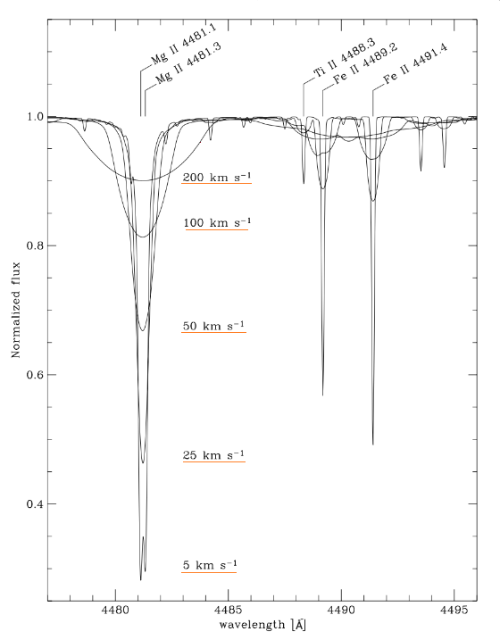
La figura 1 corresponde a un espectro sintético con Teff = 10.000K y log g=4.0dex donde pueden apreciarse los efectos del incremento de la velocidad de rotación (vsin i ). Las líneas se vuelven más anchas y (pierden intensidad), pero el ancho equivalente no varía. También puede verse cómo se mezclan líneas cercanas y hace casi imposible la identificación individual.
Un poco más formal ...
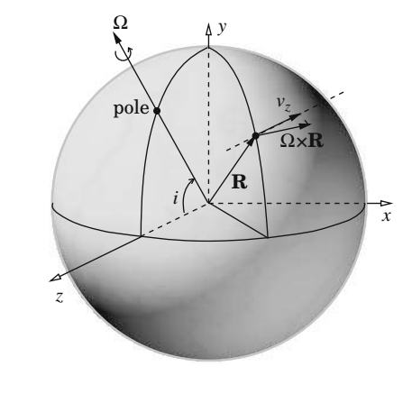
En la figura 2 se representa una estrella rotando como un cuerpo sólido. Los ejes cartesianos se eligen tal que el eje z este en la dirección del observador. i es la inclinación del eje de rotación con respecto al eje z.
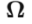
es el vector de velocidad angular y para cualquier punto de la superficie de la estrella definido por un vector de radio R, la velocidad resultante es el producto vectorial.
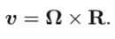
Si sus coordenadas son

Haciendo el producto podemos obtener la componente de la velocidad de rotación observada
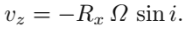
Como los cambios máximos ocurren en la superficie
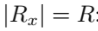
Finalmente
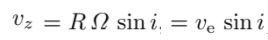
donde Ve es la velocidad ecuatorial.
Entonces lo que medimos es Vsin(i).
Si se divide el disco aparente en bandas a distancias Rx (figura3), la contribución de cada componente Vz afectada por un dado corrimiento Doppler nos dará la línea espectral resultante(figura 4)
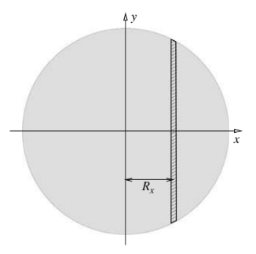 figura 4
figura 4
- Sabemos que la rotación no es la única causa del ensanchamiento, existen muchas otras tanto intrínsecas como extrínsecas. El perfil de la línea es así estudiado teniendo en cuenta todos estos efectos lo que hace en ocasiones muy difícil su análisis.(oscurecimiento del limbo) ( Un poco de matemática … convolución perfi lorentziano, Voigt)
Técnicas para medir [v sin i ] con espectroscopía:
- La más simple se basa en la medición del FWHM (ancho a mitad de profundidad) mediante el ajuste de una función analítica (generalmente gaussiana) a la línea.
- El FWHM también puede ser medido usando correlación cruzada entre el espectro de una estrella de programa contra modelos (espectros sintéticos) ensanchados diferentes. El ensanchamiento del modelo que mejor correlaciona es, entonces, asignado al espectro que se quiere medir. Los espectros sintéticos son usados mucho más para estudios de abundancias, pero también puede obtenerse [v sin i] y es una herramienta muy útil en caso de presencia de mezcla de líneas severa.
- Análisis de Fourier de perfiles espectrales.
Contras: Estas mediciones de [v sin i] pueden ser usadas solamente de forma estadística porque por lo general no se sabe cuál es la inclinación. Hay evidencias de que estas inclinaciones están distribuidas aleatoriamente y puede demostrarse que
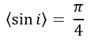
b) Efecto Rossiter
Es otro efecto espectroscópico que se da en sistemas binarios. Las componentes pueden eclipsarse parcialmente y entonces vemos solo una parte del disco estelar, esto hace que la velocidad radial que midamos se encuentre fuertemente afectada.
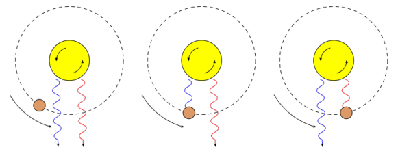
figura 5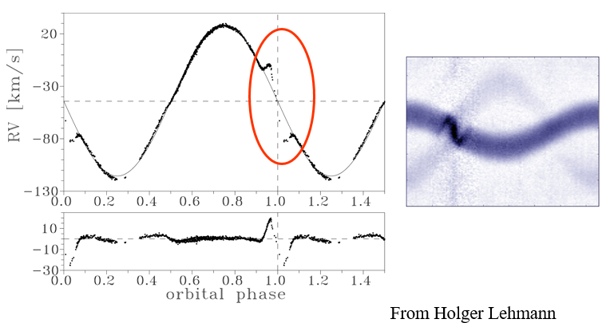
figura 6
c) Fotometría
Se aplica en estrellas cromosfericamente activas, (tipo G,K,M) y no están afectadas por la inclinación de la órbita. Las manchas superficiales de las estrellas rotan (prácticamente) con la estrella, produciendo variaciones en el brillo estelar. En este caso se obtienen periodos rotacionales. Conociendo el radio de la estrella, estos periodos pueden ser transformados a verdaderas velocidades ecuatoriales.
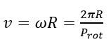
D) Interferometría
Esta técnica observacional permite resolver el disco estelar. Se calcula el achatamiento causado por una rotación rápida, la estrella presenta radios ecuatoriales mayores a los polares. Se utiliza en estrellas cercanas y muy brillantes.
Comportamiento a lo largo de la secuencia principal
La distribución de las velocidades de rotación a lo largo de la secuencia principal es bastante llamativa.
La rotación crece desde tipos F muy tempranos hasta algún máximo en las estrellas tipo B.
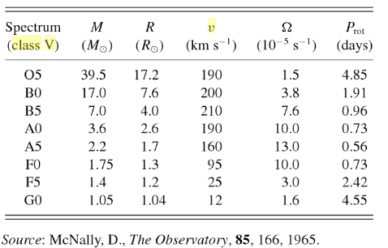
figura 7
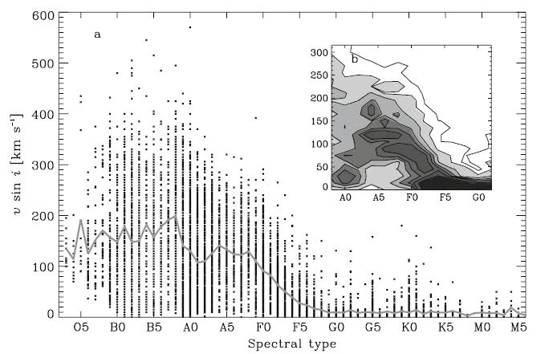
figura 8
Los efectos de la rotación en la evolución de estrellas
Después de los años 60 se han hecho muchos trabajos teniendo en cuenta los efectos de la rotación en la estructura estelar. En estos trabajos se obtuvieron modelos de estrellas de clase V rígidamente rotantes y se encontró que la secuencia principal en el diagrama HR estaba movida a la derecha.
En el figura 9 se observa la trayectoria evolutiva de estrellas de determinada masa teniendo en cuenta la rotación de las mismas. El final de las trayectorias indican la posición que ocupa la estrella cuando llega a la secuencia principal y el tiempo que tarda en hacerlo.
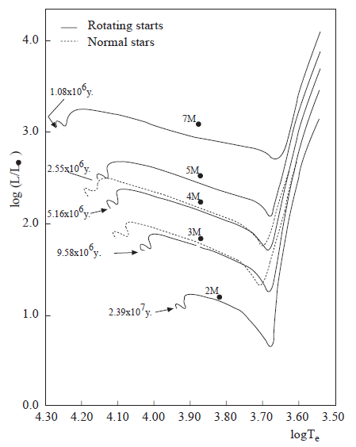
}figura 9Los efectos de la rotación en la estructura y evolución de una estrella pueden agruparse en 3 grandes grupos:
- La rotación reduce la presión interna, teniendo como consecuencia que la quema de hidrógeno se haga más lenta aumentado el tiempo de combustión a un 3%.
- Reduce la luminosidad y cambia la forma de la estrella, lo que puede llevar a leves cambios en el tipo espectral ya que rotadores más rápidos aparentan ser mas fríos si se los observa ecuatorialmente, donde el radio es mayor.
- El más significativo es el transporte de momento angular que consecuentemente hace que en ciertas regiones de la estrella haya mezcla de elementos. En estrellas masivas donde se da el ciclo CNO(carbono-nitrógeno-óxigeno),los elementos pesados pueden subir a la superficie, afectando las abundancias observadas, dando lugar a espectros peculiares. Por otro lado, el H de capas superiores puede "caer" al núcleo aumentando así la cantidad de combustible fresco y extender el tiempo de vida en secuencia principal.
Referencias:
1,4 Apuntes de la cátedra
2,3,8 'The Rotation of the Sun and Stars''
7 "Stellar Rotation''
9 Halil Kirbiyik, 1998, Rotation in Stars,
Bibliografía:
1. Apuntes de la cátedra de Astronomía Estelar
2. F. Royer,''The Rotation of the Sun and Stars''
3."Stellar Rotation'' de Jean-Louis Tassoul
4. "An introduction to Stellar Astrophysics", Stelar Atmospheres ,p127.
5.Halil Kirbiyik, 1998," Rotation in Stars", Middle East Technical University, Physics Department, Ankara - TURKEY
6. Sletteback A., 1985, "Determination of Stellar rotational velocities"